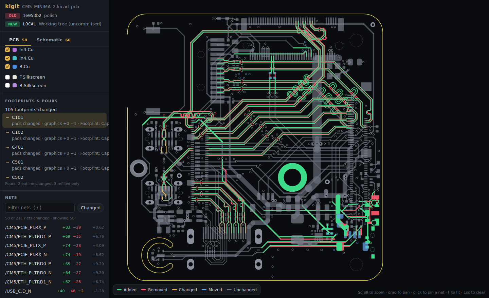

Introduction¶
What is kigit?¶
kigit is a visual diff for KiCad projects kept in git. Text diffs of .kicad_pcb and .kicad_sch files are thousands of lines of coordinates. kigit turns them into a picture of the board and schematic where every change is coloured, so you can review a layout change the way you'd review code.
It is a single command-line program (C++) plus an optional GUI. It runs on Windows and Linux.
It requires no internet connection, no logins, simply just an offline application that you can use to review your PCB changes.
kigit CLI¶
kigit CLI provides you the ability to simply perform every action via the command line interface without the need for any GUI. As demonstrated in the video above, all functionalities are accessible from the cli, and it will generate the .html file which you can specify its output directory. If not provided, by default, it will be stored in kigit hidden directory .kigit/.
kigit GUI¶
Similar to kigit CLI, kigit GUI simply provides the you with the ability to do everything via GUI. This is much more desirable as it may be more intuitive and easy to perform comparison where needed.
Core concepts¶
Two revisions¶
Every comparison is either between:
- an old and a new revision
- two commits (chosen by the unique hash found from the commits)
- a commit and your uncommitted changes (
LOCAL) - two folders when there's no git at all. "Added" always means added in the newer one.

Matching¶
kigit matches items between the two revisions before colouring anything:
- PCB: tracks, arcs, vias and pads are matched first by KiCad's internal ID, then by geometry (same kind, net, layers and coordinates to 1 nm). An item with the same ID and the same copper at a new place is moved, not removed and re-added, so moving a footprint doesn't light up the whole board.
- Schematic: parts are matched by KiCad ID (then reference), so re-annotating shows as a rename. Nets are paired by label name, else by shared pins.
What a change looks like in the actual kicad source file¶
Each example shows the same item in the old and new .kicad_pcb, side by side, the way the source panel shows it. Removed text is red, added text green, and the exact characters that changed are highlighted.
| 1204 | (segment | 1204 | (segment |
| 1205 | (start 121.5 84.25) | 1205 | (start 121.5 84.25) |
| 1206 | (end 135 84.25) | 1206 | (end 135 90.75) |
| 1207 | (width 0.25) | 1207 | (width 0.4) |
| 1208 | (layer "F.Cu") | 1208 | (layer "F.Cu") |
| 1209 | (net 12) | 1209 | (net 12) |
| 1210 | (uuid "8c1f3e7a-52b4-4d0e-9a51-3c2f6d1b7e40") | 1210 | (uuid "8c1f3e7a-52b4-4d0e-9a51-3c2f6d1b7e40") |
| 1211 | ) | 1211 | ) |
| 2310 | (footprint "Resistor_SMD:R_0603_1608Metric" | 2310 | (footprint "Resistor_SMD:R_0603_1608Metric" |
| 2311 | (layer "F.Cu") | 2311 | (layer "F.Cu") |
| 2312 | (uuid "2b9d6c41-7f0a-4e83-b1d2-95c4a0e8f317") | 2312 | (uuid "2b9d6c41-7f0a-4e83-b1d2-95c4a0e8f317") |
| 2313 | (at 142.24 96.52 90) | 2313 | (at 150.5 96.52 0) |
| 2314 | (property "Reference" "R12" | 2314 | (property "Reference" "R12" |
| ⋯ 31 unchanged lines | |||
| 2346 | (pad "1" smd roundrect | 2346 | (pad "1" smd roundrect |
| 2347 | (at -0.825 0 90) | 2347 | (at -0.825 0 90) |
| 2348 | (size 0.8 0.95) | 2348 | (size 0.8 0.95) |
| 2349 | (layers "F.Cu" "F.Paste" "F.Mask") | 2349 | (layers "F.Cu" "F.Paste" "F.Mask") |
| 1876 | (via | ||
| 1877 | (at 128.27 101.6) | ||
| 1878 | (size 0.6) | ||
| 1879 | (drill 0.3) | ||
| 1880 | (layers "F.Cu" "B.Cu") | ||
| 1881 | (net 3) | ||
| 1882 | (uuid "e41a07c9-3d5b-48f2-a6e0-7b19c25d8a64") | ||
| 1883 | ) |
| 1188 | (segment | 1188 | (segment |
| 1189 | (start 98 72.5) | 1189 | (start 98 72.5) |
| 1190 | (end 110.25 72.5) | 1190 | (end 110.25 72.5) |
| 1191 | (width 0.25) | 1191 | (width 0.25) |
| 1192 | (layer "B.Cu") | 1192 | (layer "B.Cu") |
| 1193 | (net 7) | 1193 | (net 7) |
| 1194 | (uuid "5a0e93c2-18d4-4b6f-8e27-c3f1a9d04b85") | 1194 | (uuid "f7c2d815-6e09-4a3b-b54d-0d8e2a61c9f3") |
| 1195 | ) | 1195 | ) |
Types of changes¶
Schematic changes are split into three types:
| Type | What counts | Examples |
|---|---|---|
| Electrical | Anything that changes the circuit | A part added or removed; its value, footprint or symbol changed; a pin moved to another net |
| Fields only | Text on a part that doesn't change the circuit | BOM fields like MPN, or the reference |
| Cosmetic | Layout changes with the same connections | Parts moved, wires redrawn, labels moved |
One HTML file¶
The result is one self-contained HTML page with the PCB and schematic as tabs. It requires no server which you can open it, keep it, or attach it to a pull request.
Further guidance¶
Follow the given order to see how kigit works from end-to-end:
- Installing kigit
- Using kigit Command Line (cli)
- Using kigit GUI
- General kigit User Interface (UI) Overview
- Using PCB viewer
- Using schematic viewer
Limitations¶
- Custom-shaped pads are drawn as their anchor rectangle.
- Footprint graphics (courtyards, fab) aren't drawn; silkscreen is optional.
- Zones (copper pours) are drawn from the newer revision only and aren't diffed, because refilling a pour changes its shape every time.
- Old KiCad 5 boards are parsed but less tested.
- macOS isn't supported for now.